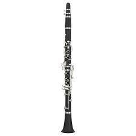
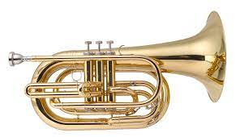

Band taught me resilience, hard work, and to never give up.
Marching band season was my favorite part of the band because we used to travel and I built long term friendships.
Music was something that always spoke to me so learning to play an instrument came naturally with some help from my director of course.
During my band days I learned how to play five different instruments which included :
Clarinet 
Baritone

Euphonium (marching french horn 
French Horn

Tenor Saxophone